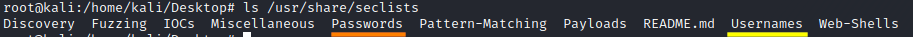

Dictionary Attacks
Attacks that use a dictionary of common most likely
keys
Especially for symmetric key algorithms where keys are selected by users, this approach can work
better than the Brute force attack.
The key stored in the dictionary are in cleartext so the tool that we
use to do a dictionary attack need to encipher every key
Different cleartexts can produce the same cipher but
it’s not important to know which the exact text, as long as it produces the same cipher.
In fact the check is
done between ciphers and not between cleartexts.
Dictionaries sources
Some keys dictionaries can be installed on kali linux with
after the installation we will find the dictionaries in
/usr/share/seclists/Passwords/Below we can find a comprehensive wordlists with passwords leaked from
various sources.
We can get several of these password lists and put them together into a single large file
that we can use for password cracking attacks
•
https://wiki.skullsecurity.org/Passwords•
https://weakpass.com/wordlist